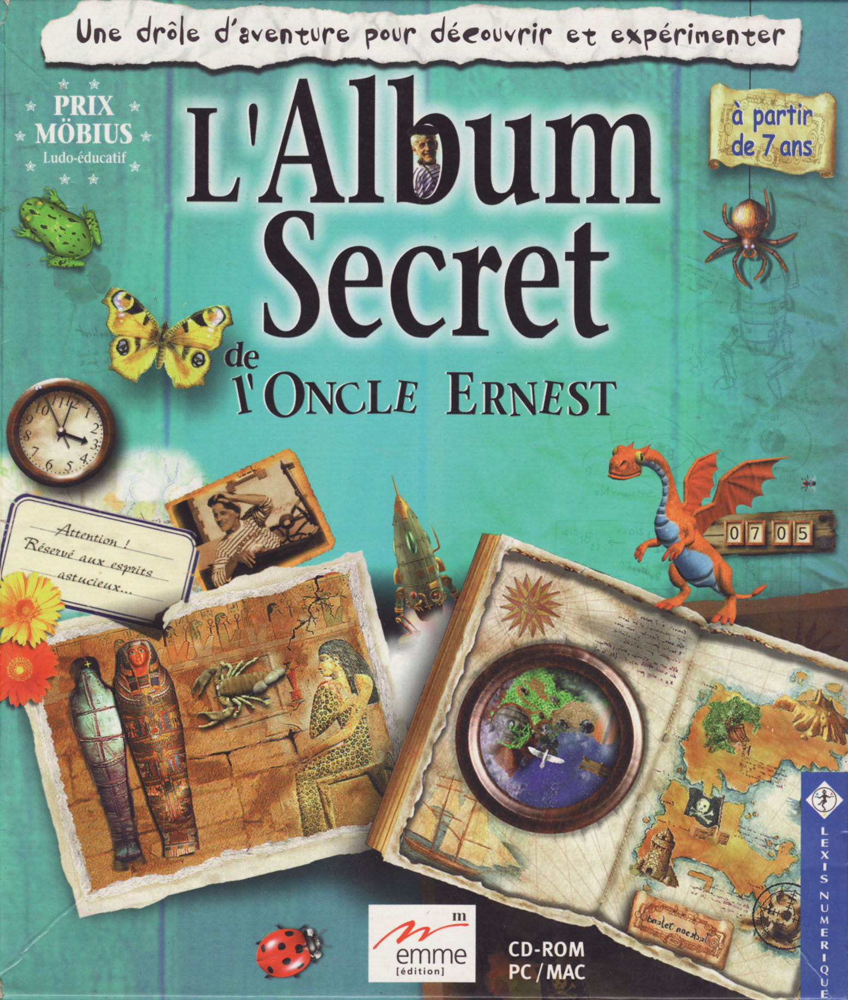
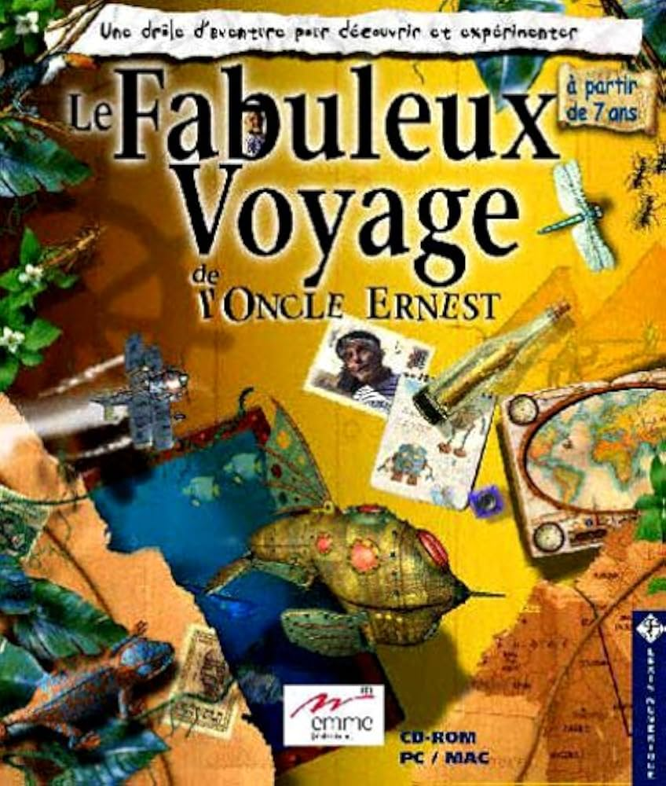
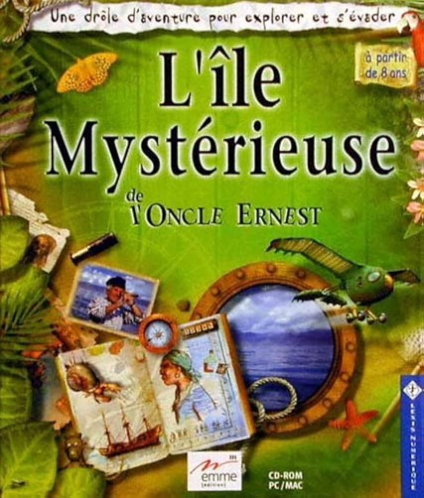
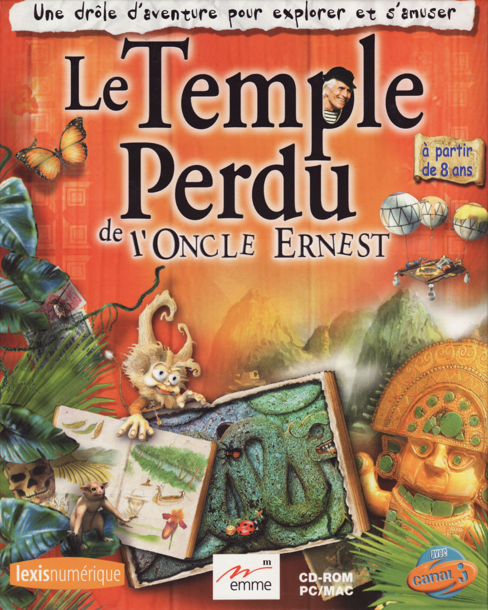
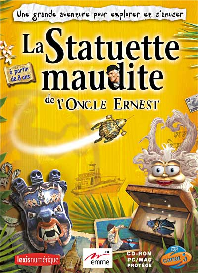
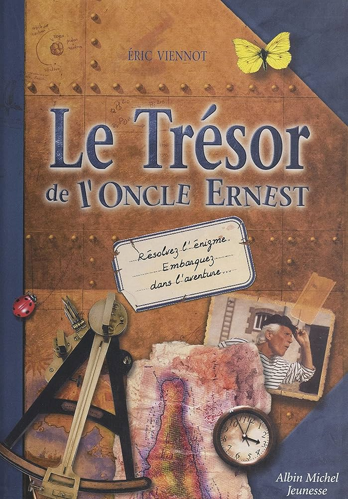
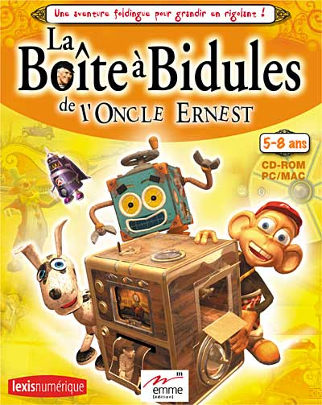
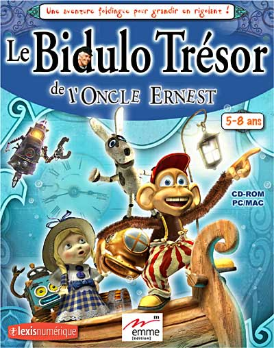
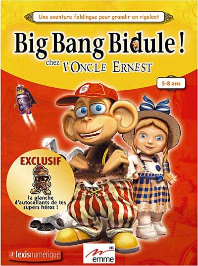
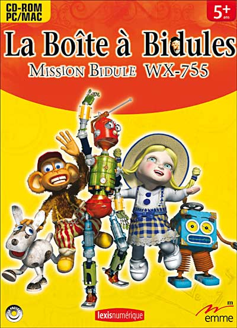

L'Album secret de l’oncle Ernest (1998)

Le fabuleux trésor de l'oncle Ernest est-il réellement perdu?
En retrouvant son album secret au fond du grenier, vous pourriez bien dire le contraire... à condition de savoir résoudre les énigmes, déjouer les pièges tendus et ouvrir les passages secrets cachés dans cet album fantastique.
Les animaux malicieux, les outils amusants, les machines bizarres rencontrés au fil des pages, pourront vous aider dans cette quête.
A vous de faire preuve d'intelligence, d'esprit d'observation et d'habileté...
Récompenses : Prix Möbius des multimédias 1998, Eurêka d’Or du meilleur CD-ROM de l’année, Nommé à l’Europrix 1999, Nommé aux Emma Awards, Nommé aux Macworld Awards, Prix des nouveaux médias au festival de Bologne.
Le Fabuleux Voyage de l'oncle Ernest (1999)

De ses nombreux voyages, l’oncle Ernest a rapporté plein de secrets.
Découvrirez-vous celui qui permettra de sauver Tom, son caméléon apprivoisé, menacé par un grave danger ?
En partant sur ses traces aux quatre coins du monde, vous n’avez pas fini d’être étonné... D’Istanbul à Zanzibar, en passant par Bornéo, l’Amazonie et de nombreux pays lointains, voici un fabuleux voyage riche en surprises et en rebondissements.
Crocodiles, plantes carnivores, crabes facétieux, recettes magiques, l’oncle Ernest ne doute pas de vos qualités pour venir à bout des nombreux obstacles placés sur votre route...
Récompenses : Flèche d’Or Fnac du meilleur CD-ROM jeunesse de l’année (7 ans et plus), Mim d’Or du meilleur jeu pour enfants (8 ans et plus), Arobas d’Or 2000, 1er aux Gigamouse Awards 2000, Nommé à l’Europrix 2001, Sélectionné par Télérama pour le festival multimédia du Forum des images, Sélectionné par la Cité des sciences et de l'industrie pour l’exposition Désir d’apprendre.
L'Île Mystérieuse de l'oncle Ernest (2000)

Quel est donc cet étrange secret que l'Oncle Ernest a rapporté de son île lointaine ?
Une nouvelle fois, son album vous aidera sans doute à éclaircir le mystère…
Vous devrez pour cela explorer l'île dans ses moindres recoins, comprendre les curieux mécanismes qui vous ouvriront les passages secrets, et surtout faire face à l'étrange malédiction qui hante ces lieux inhabités depuis des siècles...
Pirates redoutables, machines bizarres, singe malicieux, perroquet moqueur : à vous de faire preuve d'astuce et d'habileté pour vaincre les obstacles et résoudre l'énigme.
Récompenses : Sélectionné par le jury multimédia du Salon du livre et de la presse jeunesse 2000, Micro Hebdo d’Or 2000.
Le Temple perdu de l'oncle Ernest (2003)

Quel secret peut donc contenir ce vieil album retrouvé au fond de la forêt amazonienne ?
Pour le savoir il va falloir partir sur les traces de l’oncle Ernest aux quatre coins du Pérou : une expédition semée d’embûches au cours de laquelle vous devrez surmonter d’étranges malédictions Incas, résoudre de curieuses énigmes, affronter scorpions et piranhas... Heureusement, vous pourrez compter sur le courage de Chipikan, votre compagnon dans cette quête, dont le destin est désormais entre vos mains.
La Statuette maudite de l'oncle Ernest (2004)

Une grande aventure en Asie :
En partant pour les terres enneigées du Népal, Chipikan ne se doute pas du long périple qui l’attend. Pour sauver son peuple de la colère du volcan, il devra surmonter bien des épreuves et trouver l’amulette sacrée. Heureusement, il pourra compter sur vous ainsi que sur l' « insectorobot », un robot entièrement programmable imaginé par l’oncle Ernest. Votre courage, votre intuition et votre jugeote lui seront également bien utiles…
Livre dérivé │ Le Trésor de l'oncle Ernest (2000)

Retrouvé au fond d'un grenier, l'album de voyages que vous avez dans les mains renferme un formidable secret. Pour preuve, ces indices précieux que l'oncle Ernest a soigneusement dissimulés parmi les nombreux objets, dessins et souvenirs collectés aux quatre coins du monde.
En les décodant, vous partirez sur ses traces à la recherche d'un mystérieux album.
Né sur CD-Rom, l'oncle Ernest devient sans doute le premier personnage du multimédia pour enfants à faire l'objet d'une déclinaison sous forme de livre.Série dérivée │ La Boite à Bidules de l'oncle Ernest (2002)

L'oncle Ernest a créé une boîte extraordinaire dans laquelle vit toute une bande de jouets vivants, dont Gus le singe, Léonie la poupée, Toto le chien et Bébert le robot.
Mais où est donc passée Léonie ? Réveillés après un long sommeil, Bébert, Toto et Gus, trois jouets mécaniques créés autrefois par l'oncle Ernest, ont de quoi être inquiets... Leur copine a disparu, et, dans cette immense boîte à bidules qui leur sert de domicile, tout est désormais sens dessus dessous. Pensez donc : oubliée au fond du grenier, cette vieille mécanique inventée autrefois par l'oncle Ernest a eu le temps de rouiller ! Pour la remettre en ordre, il va leur falloir une bonne dose d'astuce et beaucoup de courage. Mais pas d'inquiétude, pour retrouver leur copine disparue, nos trois héros sont prêts à relever les défis les plus fous. Une aventure complètement foldingue commence alors dans cette boîte remplie de trucs bidules en tous genres...
Série dérivée │ Le Bidulo Trésor de l'Oncle Ernest (2003)

La Boite à bidules de l’oncle Ernest cache t-elle un trésor ? Deux individus patibulaires en sont tellement persuadés qu’ils sont prêts à la démonter entièrement pour le trouver ! Cela n’arrange pas les affaires de Gus, Léonie, Bébert et Toto, ces quatre jouets mécaniques créés autrefois par l’oncle Ernest, pour qui cette boite extraordinaire sert de domicile. Pour sauver leur monde, ils n’ont qu’une solution : retrouver ce mystérieux trésor avant que les deux cambrioleurs ne reviennent.
Série dérivée │ Big Bang Bidule chez l'Oncle Ernest (2004)

En chahutant dans le grenier, un groupe d’enfants provoque dans la boîte à bidules un court-circuit qui change subitement les habitants de cette dernière.
Série dérivée │ La Boîte à Bidules : Mission bidule WX-755 (2006)

Tout est calme dans la Boîte à Bidules... Gus, Bébert et Toto réalisent des travaux de peinture… Soudain, des gouttes d’huiles tombent du plafond à tel point que Léonie glisse par terre. Une alarme se met en route ! Et l'oncle Ernest apparaît subitement : ' un problème technique a été détecté dans la boite au niveau 58Z3 '. Toto est perplexe car cette zone n'existe pas. Une première mission donc pour nos héros : se rendre chez Paperasse Bidule pour vérifier la cadastre…